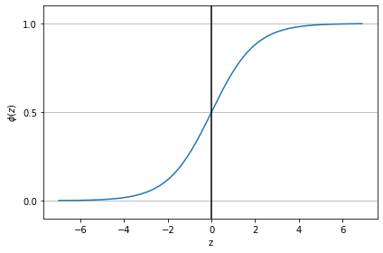

import matplotlib.pyplot as pltimport numpy as npimport warningswarnings.filterwarnings(action='ignore')def sigmoid(z):return1.0/ (1.0+ np.exp(-z))z = np.arange(-7, 7, 0.1)phi_z = sigmoid(z)plt.plot(z, phi_z)plt.axvline(0.0, color='k') # Add a vertical line across the Axesplt.ylim(-0.1, 1.1)plt.xlabel('z')plt.ylabel('$\phi(z)$')plt.yticks([0.0, 0.5, 1.0])ax = plt.gca() # Get the current Axesax.yaxis.grid(True) # Whether to show the grid linesplt.tight_layout()plt.show();

로지스틱 비용 함수의 가중치 학습
최대 가능도 -> 로그 가능도 함수 -> 비용 함수 \begin{falign}
$ J((z),y;) =
\[\begin{cases}
-log(\phi(z)) \quad y=1일 때 \\
-log(1-\phi(z)) \quad y=0일 때
\end{cases}\]
$
def cost_1(z):return- np.log(sigmoid(z))def cost_0(z):return- np.log(1- sigmoid(z))z = np.arange(-10, 10, 0.1)phi_z = sigmoid(z)c1 = [cost_1(x) for x in z]plt.plot(phi_z, c1, label='J(w) if y=1')c0 = [cost_0(x) for x in z]plt.plot(phi_z, c0, linestyle='--', label='J(w) if y=0')plt.ylim(0.0, 5.1)plt.xlim([0, 1])plt.xlabel('$\phi$(z)')plt.ylabel('J(w)')plt.legend(loc='best')plt.tight_layout()plt.show();